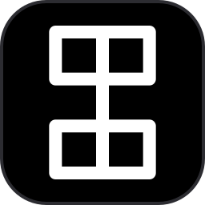

Ciscrux
Support
The time in medieval Cistercian numerals.
Ciscrux is a free macOS screen saver that shows the year, the date, the time and the seconds in Cistercian numerals, each as a single figure.
Contact
To report a problem or ask a question, open an issue on GitHub. No GitHub account? Email vulcan.shen.2304@gmail.com. If something doesn't work, please include the Ciscrux version (shown in the bottom-left corner of the Options window), your macOS version, and whether your Mac has Apple silicon or an Intel processor.
Getting started
- Download Ciscrux.zip from GitHub and open it.
- Double-click Ciscrux.saver. macOS asks whether to install the screen saver; click Install.
- Open System Settings › Wallpaper › Screen Saver… and choose Ciscrux.
- Click Options… next to Ciscrux to change what it shows.
I can't find the screen saver settings.
On recent macOS, screen savers don't have their own place in the System Settings sidebar. Open Wallpaper and click Screen Saver… near the bottom. On older versions, look for Screen Saver in System Settings or System Preferences.
Is Ciscrux free?
Yes. Ciscrux is free to download and use, with no purchase and no subscription.
How do I read the figures?
Each figure is a vertical line with up to four marks around it: the upper right is the ones, the upper left the tens, the lower right the hundreds and the lower left the thousands. The same nine marks stand for 1 to 9 in every corner, just mirrored, and 0 is left blank. Ciscrux shows the year, the date as month and day, the time as hour and minute on a 24-hour clock, and the seconds. Turn on Show Hint to see the regular digits under each figure while you learn. Try it on the Ciscrux page.
What's in the lower half of the seconds figure?
The day of the week in the lower right, 1 for Monday up to 7 for Sunday, and the moon phase in the lower left, 1 for a new moon up to 8 for a waning crescent. With Show Hint on, a small moon on the left of the seconds shows the moon phase, and the symbol on its right is the planet of the day. Each day of the week has long been paired with a planet: the Moon ☽ for Monday, Mars ♂︎ for Tuesday, Mercury ☿ for Wednesday, Jupiter ♃ for Thursday, Venus ♀︎ for Friday, Saturn ♄ for Saturday and the Sun ☉ for Sunday.
What do the options do?
- Line thickness: the line width as a share of the figure's height, 1–15%. The default is 5%.
- Show Hint: shows the regular digits under each figure. Off by default.
- Show Year (YYYY), Show Month / Day (MMDD) and Show Seconds | Moon phase | Weekday: turn each figure on or off. The time is always shown.
- Layout: Horizontal puts every figure in one row. Stacked uses two rows: four figures make a 2×2 grid, and with two or three the time sits on top.
- Animation: Stroke draws each new figure one stroke at a time, Fade cross-fades and None changes instantly.
- Background color, Stroke color and Hint color: the colors of the background, the figures and the digits under them.
- Restore Defaults: puts every option back to its default. Click OK to apply.
How do I update or uninstall Ciscrux?
To update, download the latest Ciscrux.zip and install it the same way. With Homebrew, install with brew install --cask vulcanshen/tap/ciscrux and update with brew upgrade --cask ciscrux. If you still see the old version after updating, restart your Mac or log out and back in: a screen saver that has already run can stay loaded.
To uninstall, delete Ciscrux.saver from ~/Library/Screen Savers, or from /Library/Screen Savers if you installed it for all users. In Finder, choose Go › Go to Folder… and paste the folder path. With Homebrew, run brew uninstall --cask ciscrux.
Privacy
Ciscrux has no network code and collects no data; it only keeps its options on your Mac. See the Privacy Policy.
Requirements
macOS 11 or later, on a Mac with Apple silicon or an Intel processor.